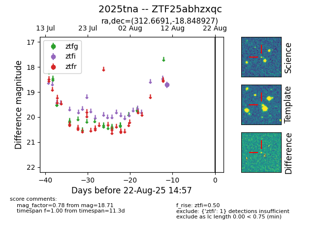

Target 2025tna at 2025-08-21 11:20, see:
FINK: fink-portal.org/ZTF25abhzxqc
Lasair: lasair-ztf.lsst.ac.uk/objects/ZTF25abhzxqc
ALeRCE: alerce.online/object/ZTF25abhzxqc
TNS: wis-tns.org/object/2025tna
YSE: ziggy.ucolick.org/yse/transient_detail/2025tna
alt names
ZTF25abhzxqc (ztf,alerce)
2025tna (tns,yse)
coordinates:
equatorial (ra, dec) = (312.6691,-18.84893)
galactic (l, b) = (27.8511,-34.47323)
photometry
last ztfi=18.71
1 ztfi detections
